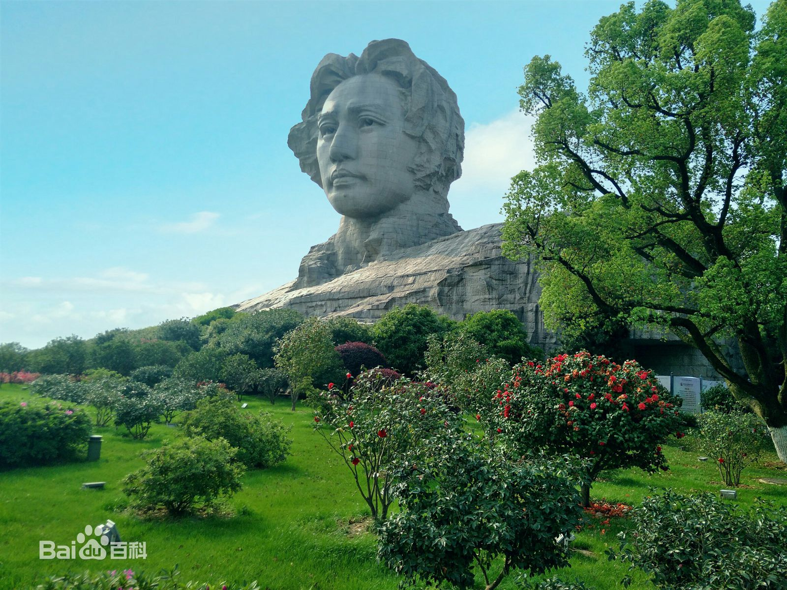
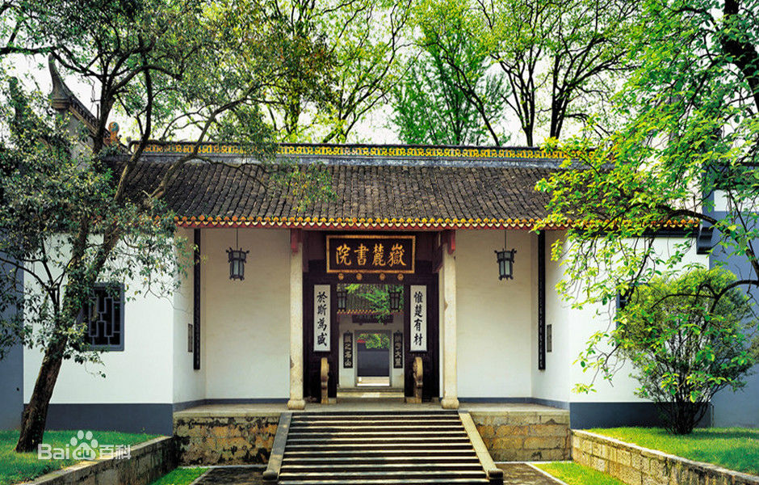

独立寒秋，湘江北去，橘子洲头。 看万山红遍，层林尽染；漫江碧透，百舸争流。 鹰击长空，鱼翔浅底，万类霜天竞自由。 怅寥廓，问苍茫大地，谁主沉浮？ 携来百侣曾游，忆往昔峥嵘岁月稠。 恰同学少年，风华正茂；书生意气，挥斥方遒。 指点江山，激扬文字，粪土当年万户侯。 曾记否，到中流击水，浪遏飞舟？

来历传说
橘子洲又在湘江中尚无洲的时候，江边上生活着一群渔民。 渔民中，有一位绰号为胡子爹的老人，德高望重，深受众人的敬爱。于是大家商定，要做根腰带扎在老人腰上，让他感到温暖有力. 他们挑选了7位最会编织的姑娘，编织了一根结实的白腰带；姑娘们还在腰带上绣了一座美丽的长岛。胡子爹接受了这一特殊的礼物， 并把它系在腰中。有一天，胡子爹和渔民们在江中捕鱼突遇暴风雨，一时间，狂风大作，白浪滔天，十分危险，可处在风浪中的胡子 爹只觉得腰间产生了一股巨大的力量，只划几下就到了岸边。他深感奇怪，双手往腰间一摸，才发现是腰带给了他力量。于是，他解 下腰带，奋力向正在风浪中挣扎的伙伴们扔去…… 腰带向江中飘去，越飘越长，越飘越大，最后飘到渔民们的面前，变成了一决腰带 形的陆地。渔民们登上陆地得救了。他们知道这陆地是胡子爹的腰带变成的，都十分珍爱这块陆地，于是就在陆地上安家立户，精心 耕种，将陆地耕耘成一座美丽的长岛。

老的学府之一，其古代传统的书院建筑至今被完整保存，每一组院落、每一块石碑、每一枚砖瓦、每一支风荷，都闪烁着时光淬炼的人 文精神。1988年，岳麓书院建筑群被国务院批准为第三批全国重点文物保护单位。 岳麓书院历经千年而弦歌不绝，学脉延绵。北宋开宝九年（公元976年），潭州太守朱洞在僧人办学的基础上，由官府捐资兴建，正式创立岳 麓书院。北宋祥符八年（公元1015年），宋真宗召见岳麓山长周式，御笔赐书“岳麓书院”四字门额。 [1] 嗣后，历经南宋、元、明、清各 代，至清末光绪廿九年（公元1903年），岳麓书院与湖南省城大学堂合并改制为湖南高等学堂，沿用书院旧址。中华民国15年（公元1926年） ，湖南高等学堂正式定名湖南大学，仍就书院基址扩建至今。 1986年湖南大学宣布完成修复岳麓书院，并正式对外开放。 2005年湖南大学正式恢复岳麓书院，下设中国哲学研究所、历史研究所、中国思想文化研究所、中国书院研究中心和中国软实力文化研究中心 等多个部门。 2009年岳麓书院学科从本科、硕士研究生、博士研究生到博士后科研流动站的格局已经完备。正式成为为湖南大学的实体办学机构和科研基地， 千年学脉再次延绵，千年学府再添光辉。 今天的岳麓书院不仅是湖南大学的文史哲人才培养和研究基地，湖南省旅游胜地，更是是整个长沙市的文化窗口和文化名片。